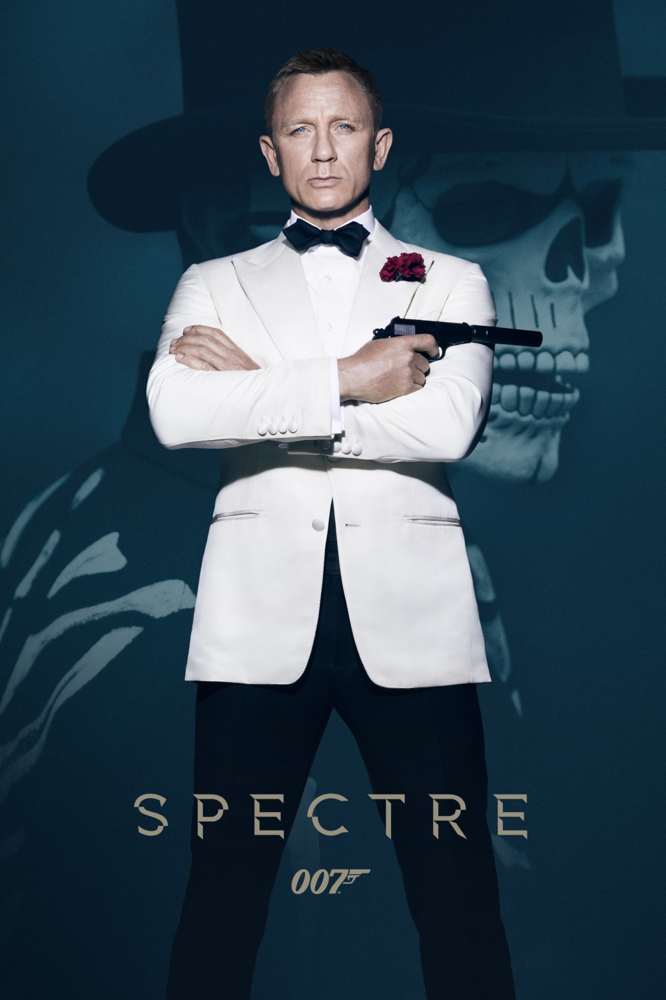

Мировая премьера: 6 ноября 2015
Слоган: Бонд возвращается.
Сюжет: Зашифрованное послание из прошлого выводит Бонда на след зловещей глобальной организации под кодовым названием "СПЕКТР", в то время как М пытается спасти секретную разведывательную службу от ликвидации.
Режиссёр: Сэм Мендес
В основе: Серия романов и рассказов Яна Флеминга о Джеймсе Бонде (Великобритания, 1953-1966)
Серия: Джеймс Бонд
В ролях: |
Дэниэл Крэйг | Коммандер Джеймс Бонд |
| Леа Сейду | Доктор Мадлен Сванн | |
| Кристоф Вальц | Эрнст Ставро Блофельд / Франц Оберхаузер | |
| Рэйф Файнс | Гэрет Меллори / М | |
| Бен Уишоу | Кью | |
| Наоми Харрис | Ив Манипенни | |
| Эндрю Скотт | Макс Денби / С | |
| Моника Белуччи | Лючия Скьярра | |
| Джеспер Кристенсен | Мистер Уайт | |
| Рори Киннир | Билл Тэннер | |
| Дэйв Батиста | Хинкс | |
| Джуди Денч | М |
Бюджет: $ 245 млн.
Кассовые сборы в США: $ 200 млн.
Кассовые сборы в мире: $ 881 млн.
Продолжительность: 2 ч. 21 мин.
Рейтинг: 6.8